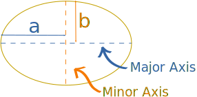
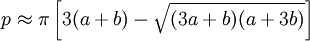
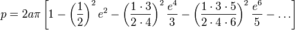
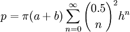
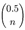
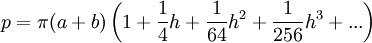

Perimeter of an Ellipse
On the Ellipse page we looked at the definition and some of the simple properties of the ellipse, but here we look at how to more accurately calculate its perimeter.
Perimeter
Rather strangely, the perimeter of an ellipse is very difficult to calculate!
There are many formulas, here are some interesting ones. (Also see Calculation Tool below.)
First Measure Your Ellipse!

a and b are measured from the center, so they are like "radius" measures.
Approximation 1
This approximation is within about 5% of the true value, so long as a is not more than 3 times longer than b (in other words, the ellipse is not too "squashed"):
Approximation 2
The famous Indian mathematician Ramanujan came up with this better approximation:

Approximation 3
Ramanujan also came up with this one. First we calculate "h":
Then use it here:
Infinite Series 1
This is an exact formula, but it needs an "infinite series" of calculations to be exact, so in practice we still only get an approximation.
First we calculate e (the "eccentricity", not Euler's number "e"):
Then use this "infinite sum" formula:
![ellipse perimeter approx 2a pi [ 1 - sigma i=1 to infinity of ( (2i)!^2/(i!2^i)^4 times e^21/(2i-1))]](images/ellipse-perim-4.gif)
Which may look complicated, but expands like this:

The terms continue on infinitely, and unfortunately we must calculate a lot of terms to get a reasonably close answer.
Infinite Series 2
But my favorite exact formula (because it gives a very close answer after only a few terms) is as follows:
First we calculate "h":
Then use this "infinite sum" formula:

(Note: the  is the Binomial Coefficient with half-integer factorials ... wow!)
It may look a bit scary, but it expands to this series of calculations:

The more terms we calculate, the more accurate it becomes (the next term is 25h4/16384, which is getting quite small, and the next is 49h5/65536, then 441h6/1048576, then 1089h7/4194304)
The Perfect Formula
There is a perfect formula using an integral:
(Note: e is the eccentricity from above)
But calculating it needs an infinite amount of terms ("Infinite Series 1" above).
Comparing
Just for fun, I calculate the perimeter using the three approximation formulas, and the two exact formulas (but only the first four terms, including the "1", so it is still just an approximation) for selected values of a and b:
| Circle | Lines | |||||
| a: | 10 | 10 | 10 | 10 | 10 | |
| b: | 10 | 5 | 3 | 1 | 0 | |
| Approx 1: | 62.832 | 49.673 | 46.385 | 44.65 | 44.429 | |
| Approx 2: | 62.832 | 48.442 | 43.857 | 40.606 | 39.834 | |
| Approx 3: | 62.832 | 48.442 | 43.859 | 40.639 | 39.984 | |
| Series 1: | 62.832 | 48.876 | 45.174 | 43.204 | 42.951 | |
| Series 2: | 62.832 | 48.442 | 43.859 | 40.623 | 39.884 | |
| Exact*: | 20π | 40 |
* Exact:
- When a=b, the ellipse is a circle, and the perimeter is 2πa (62.832... in our example).
- When b=0 (the shape is really two lines back and forth) the perimeter is 4a (40 in our example).
They all get the perimeter of the circle correct, but only Approx 2 and 3 and Series 2 get close to the value of 40 for the extreme case of b=0.
Ellipse Perimeter Calculations Tool
This tool does the calculations from above, but with more terms for the Series.